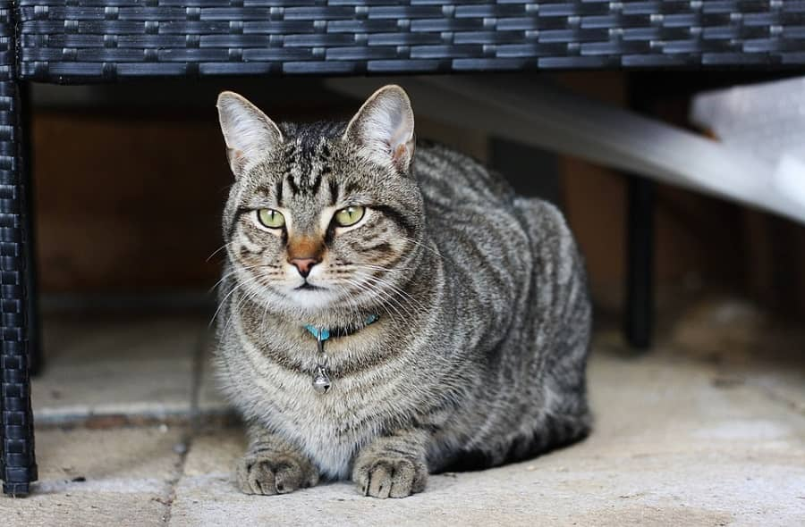
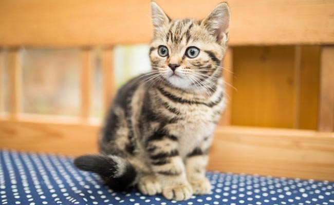
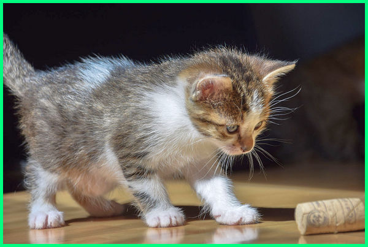
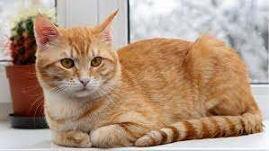
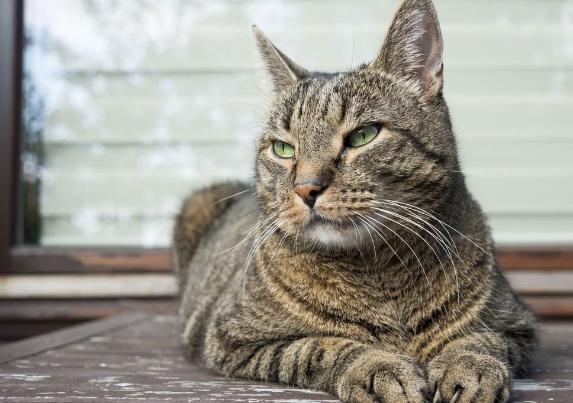

Gallery Kucing
Berikut adalah daftar kucing yang siap diadopsi :

Abu. Laki-laki. 17 bulan. Kucing Kampung
Bibib. Perempuan. 2,5 bulan. Kucing Kampung
Lala. Perempuan. 1 bulan. Kucing Kampung
Miki. Laki-laki. 30 bulan. Kucing Kampung
Toro. Laki-laki. 5 tahun. Kucing Kampung